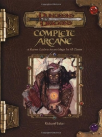

“Complete Arcane” on the
Shelf of Many Books

Complete Arcane: A Player’s Guide to Arcane Magic for All Classes
D&D 3.5
(3e)
Year
: 2004 (November)
Complete Arcane
on Amazon
Complete Arcane
on TSR Info
Known monsters from the book:
Air Monolith
Animated Rug of Welcome
Chaggrin
Earth Monolith
Effigy Creature
Fire Monolith
Harginn
Ildriss
Pseudonatural Creature
Spellstitched
Vardigg
Water Monolith